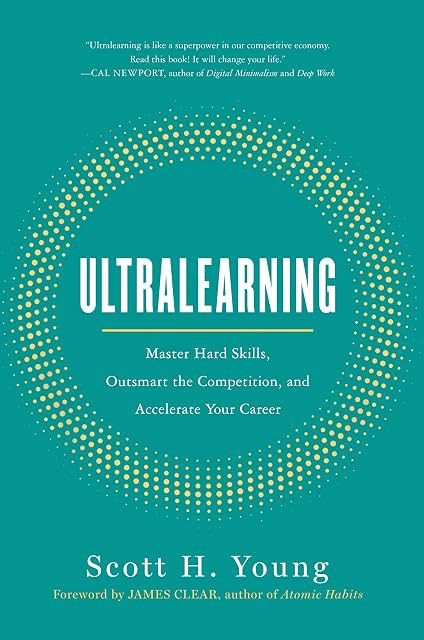

Ultralearning, by Young
Thursday July 23, 2026
Scott Young's first book came out in 2019. It's okay, and it was reasonably successful. "Intense learning" is at least as good a name. There are some good ideas. I worry about everyone (Young) needing to release content constantly and be an "influencer" with goofy hooks; that culture permeates the book. But I do support diving in and learning things.
Young motivates the book too much, in my opinion, as being about developing job skills. It's sort of a version of "escaping the permanent underclass:" Young references Average is Over directly. The argument doesn't age particularly well, and I wonder whether to some extent it was forced on the author by editors concerned about selling books.
The title of the book was a gift from Cal Newport, who wrote about Young's effort to study the contents of a four-year degree in one year. The title of Newport's post was "Mastering Linear Algebra in 10 Days: Astounding Experiments in Ultra-Learning." (Unfortunately, there's nothing interesting about Linear Algebra in the post.)
Young also borrowed a name from Feynman, and it was Feynman's name. He claims to be the originator of "the Feynman Technique," which is now broadly mis-attributed (ex1, ex2) to Feynman himself. I don't see any reason to doubt him; I can't find any real source linking the technique to Feynman except to some degree in spirit.
Young says in a footnote, "Calling this the Feynman Technique was possibly unwise. It's unclear if Feynman ever used this exact method, so I may have inadvertently given the technique an illustrious history it doesn't possess." Solid self-awareness.
The overall organization of the book is fairly good, in my opinion. I appreciate that it's thoughtfully laid out; it seems like it grew from a good outline. The meat that covers the bones doesn't always fit perfectly. The main example in my mind is that Ramanujan's use of a book without proofs is supposed to animate the "retrieval" chapter, which doesn't make sense. Ramanujan wasn't "retrieving" those proofs from memory - he was coming up with them on his own. It would fit better with "directness" or "intuition," maybe.

- Metalearning: First Draw a Map
- Why
- Tactic: The Expert Interview Method
- What: Concepts, Facts, Procedures
- How
- Benchmarking (against common ways people learn)
- The Emphasize/Exclude Method
- The 10 Percent Rule (spend 10% of time on planning)
- Why
- Focus: Sharpen Your Knife
- Start (avoid procrastinating)
- Sustain (don't get distracted)
- Distraction sources: Environment, Task, Mind
- Optimize quality
- Directness: Go Straight Ahead (Do it for real, transfer is hard)
- Tactics
- Project-Based Learning
- Immersive Learning
- The Flight Simulator Method (get as close as you can)
- The Overkill Approach (learn beyond the level you want)
- Tactics
- Drill: Attack Your Weakest Point (train "rate-limiting" skills,
focusing with less total cognitive load)
- Methods
- Time Slicing (just do part of the thing, like a song)
- Cognitive Components (just do a particular sub-skill)
- The Copycat
- The Magnifying Glass Method (spend more time on one part)
- Prerequisite Chaining (start harder than you can do, go back and fill in gaps as you find them)
- Methods
- Retrieval: Test to Learn (don't re-read, recall)
- Tactics
- Flash Cards
- Free Recall (can be better than cued recall)
- The Question-Book Method (take notes as questions)
- Self-Generated Challenges (not just questions)
- Closed-Book Learning (concept map from memory, etc.)
- Tactics
- Feedback: Don't Dodge the Punches
- Types
- Outcome Feedback ("what's my score on this")
- Informational Feedback ("what am I doing wrong")
- Corrective Feedback ("what should I do to improve")
- Tactics to Improve Your Feedback
- Noise Cancellation (focus on the right feedback)
- Hitting the Difficulty Sweet Spot (50/50 goals)
- Metafeedback (evaluate success of your learning techniques)
- High-Intensity, Rapid Feedback
- Types
- Retention: Don't Fill a Leaky Bucket
- Memory Mechanisms
- Spacing: Repeat to Remember
- Proceduralization: Automatic Will Endure
- Overlearning: Practice Beyond Perfect
- Mnemonics: A Picture Retains a Thousand Words
- Memory Mechanisms
- Intuition: Dig Deep Before Building Up
- Rules
- Don't Give Up on Hard Problems Easily
- Prove Things to Understand Them
- Always Start with a Concrete Example
- Don't Fool Yourself
- Rules
- Experimentation: Explore Outside Your Comfort Zone
- Tactics
- Copy, Then Create
- Compare Methods Side-by-Side
- Introduce New Constraints
- Find Your Superpower in the Hybrid of Unrelated Skills
- Explore the Extremes
- Tactics
This rapid change in technology means that many of the best ways of learning old subjects have yet to be invented or rigorously applied. (page 31)
I think this is not just about technology, but about old subjects being taught in old ways with old understandings of the subjects and old goals for studying them.
The uniqueness of ultralearning projects is one of the elements that ties them together. (page 47)
Although studying Latin has fallen out of favor, many educational pundits are reviving new incarnations of the formal discipline theory by suggesting that everyone learn programming or critical thinking in order to improve their general intelligence. Many popular "brain-training" games also subscribe to this view of the mind, assuming that deep training on one set of congnitive tasks will extend to everyday reasoning. It's been more than one hundred years since the verdict came in, yet the allure of a general transfer procedure still has many searching for the Holy Grail. (page 96)
Astute readers will probably notice a tension between this principle [drill] and the last [directness]. If direct practice involves working on a whole skill nearest to the situation in which it will eventually be used, drills are a pull in the opposite direction. A drill takes the direct practice and cuts it apart, so that you are practicing only an isolated component. (page 111)
Young's "Feynman Technique" on page 192:
- Write down the concept or problem you want to understand at the top of a piece of paper.
- In the space below, explain the idea as if you had to teach it to someone else. a. If it's a concept, ask yourself how you would convey the idea to someone who has never heard of it before. b. If it's a problem, explain how to solve it and—crucially—why that solution procedure makes sense to you.
- When you get stuck, meaning your understanding fails to provide a clear answer, go back to your book, notes, teacher, or reference material to find the answer.
I applied this to understanding the concept of voltage in an early class on electromagnetism during the MIT challenge. Though I was comfortable using the concept in problems, I didn't feel that I had a good intuition of what it was. It's obviously not energy, electrons, or flows of things. Still, it was hard to get a mental image of an abstract concept on a wire. Going through this technique and comparing equations to the ones for gravity, it's clear that voltage is to the electrical force as height is to the gravitational force. Now I could form a visual image. (page 195)